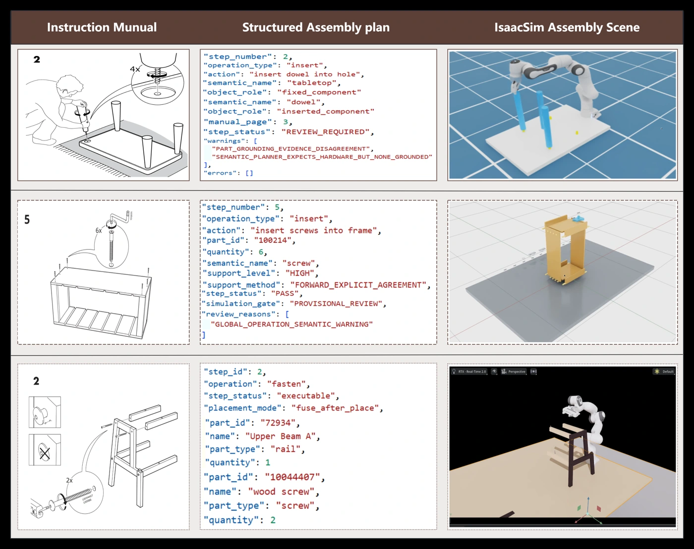

Vision–language models·Exact part grounding·Finite inventory
01 / Overview
Ground the part. Check the whole plan.
Understanding an action is only the beginning. Reliable assembly planning also needs the right physical parts, in quantities the inventory can support.
Figure 1. Evidence-guided part grounding and plan-level inventory refinement share a reviewable Assembly IR.
Abstract
Vision–language models can interpret assembly actions while confusing exact part identities, predicting unsupported Part IDs, or producing assignments that conflict across steps. CAPER (Capacity-Aware Part-grounding and Evidence Refinement) addresses these gaps through two complementary modules.
PartGround aligns step-level manual evidence with product-specific inventories and part references to identify exact Part IDs and quantities. PlanRefine audits these assignments against finite inventory and removes the lowest-confidence assignments responsible for overuse. A shared Assembly Intermediate Representation (Assembly IR) preserves operations, quantities, evidence, and unresolved cases for review. Evaluation on IKEA Assembly in the Wild (IAW) reports 83.33% finite-inventory consistency and zero observed out-of-inventory Part-ID occurrences.
Research overview & demonstration02:55 · Simulation examples
Simulation illustrations demonstrate the planning workflow; they do not establish real-world assembly success or fastening performance.
03 / Method
Two levels of reliability. One shared representation.
01 Step-level grounding
PartGround
Connect what the manual shows to the exact product-specific part. Inventory references constrain the candidates; manual evidence supports the selected Part IDs and quantities.
Input Manual evidence + inventory + part references Output Evidence-guided Part IDs and quantities
02 Plan-level refinement
PlanRefine
Audit material consumption across the complete sequence. When assignments exceed available inventory, remove the lowest-confidence ones and retain unresolved identities for review.
Operation · Part IDs · Quantities · Evidence · Warnings · Review status
04 / Evaluation
Measure identity and feasibility as separate requirements.
Reported results on IAW. A legal Part ID is not necessarily the correct Part ID; an inventory-consistent plan is not necessarily a complete plan.
83.33%
Finite-inventory consistency
10 of 12 inventory-auditable instances
58.33%
Complete-output consistency
7 of the same 12 instances
0
Out-of-inventory Part IDs
Observed occurrences in the reported evaluation
Main comparison
Values in %, except the last column
Method
Precision
Recall
Report F1
Inventory consistency
Complete-output consistency
Invalid Part-ID occurrences
Qwen3-VL-4B · Base
60.07
30.96
40.86
50.00
25.00
1
+ SFT
62.20
30.38
40.83
66.67
41.67
2
+ DPO
60.30
30.96
40.91
50.00
33.33
2
Manual2Skill controlled baseline
27.08
33.85
30.09
41.67
33.33
118
CAPER Ours
62.99
30.77
41.34
83.33
58.33
0
Inventory-consistency rates use the common subset of 12 instances with verifiable frozen inventories; three other instances lack such inventories. Manual2Skill is a controlled planning baseline using the same Qwen3-VL-4B backbone. See Table II in the paper for metric definitions and protocol.
Explore assembly examples+

Manual evidence, structured predictions, and simulated execution examples from the paper.